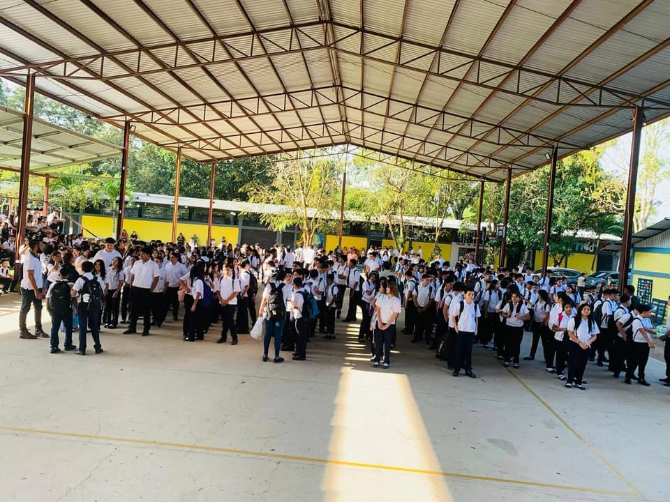
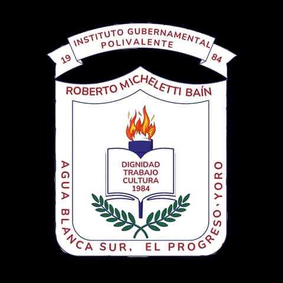

Acuerdo de fundación
No. 2648-EP.84
29 de junio de 1984.
Desde 1984
Construyendo comunidad educativa en Agua Blanca Sur, El Progreso, Yoro desde hace más de cuatro décadas.


El escudo, explicado
Pasa el cursor o navega con la tecla Tab por el escudo para descubrir el significado de cada parte.
Cronología institucional
Un recorrido por los momentos fundacionales que dieron origen al Instituto Gubernamental Polivalente que hoy sirve a la comunidad.
La idea de fundar un instituto educativo surge en la comunidad de Agua Blanca Sur como respuesta a la necesidad formativa de los jóvenes de la zona.
FECORAH organiza un comité para plantear al Gobierno la fundación de un instituto privado, presentando la solicitud a la Dirección General de Educación Media.
Acuerdo No. 2648-EP.84 del 29 de junio de 1984. Inicia con 80 alumnos de Ciclo Común en jornada nocturna en la Escuela Manuel Bonilla.
Estudiantes y comunidad elevan la petición de oficialización al Congreso Nacional cumpliendo los artículos constitucionales requeridos.
El Congreso Nacional autoriza la operación oficial desde el 1 de enero de 1986, bajo la presidencia de Roberto Suazo Córdova. Se establece la jornada diurna.
Instituto Gubernamental Polivalente consolidado, con tres modalidades de bachillerato formando generaciones de profesionales para Honduras.
Registro oficial
Los documentos y hechos que respaldan la creación y oficialización del instituto.
Acuerdo de fundación
29 de junio de 1984.
Decreto de oficialización
Congreso Nacional, 1.° de enero de 1986.
Primera promoción
De Ciclo Común, jornada nocturna.
Lema institucional
Principios que guían la formación de cada estudiante.
Filosofía institucional
Los principios que orientan el trabajo educativo del instituto y su compromiso con las familias y la comunidad.
Formar personas que evidencien competencias en el ámbito técnico y profesional, capaces de responder comprometida y éticamente a las necesidades y demandas de empresas e instituciones que contribuyen al desarrollo nacional.
Ser reconocidos como una Institución de Educación Técnico Profesional que cumple un rol de agente de movilidad social a través de la educación, destacándose por su contribución activa al desarrollo social del país.
Valores que nos definen
El instituto ha servido a generaciones de familias de Agua Blanca Sur, construyendo una identidad basada en disciplina, práctica y orgullo comunitario.
Historia reciente
Tres celebraciones que muestran lo que el instituto es hoy: comunidad, trayectoria docente y programas con identidad propia.

42° Aniversario
En 2026 el instituto celebró su 42° aniversario junto a toda la comunidad educativa: docentes, estudiantes y familias de Agua Blanca Sur que han acompañado el crecimiento del centro desde su fundación en 1984.
25° Aniversario de Humanidades
El programa de Ciencias y Humanidades cumplió 25 años preparando estudiantes con una base académica amplia. Se celebró con una gala formal que reunió a docentes, egresados y autoridades del área.


Reconocimiento docente
La comunidad educativa se reunió para reconocer en vida la trayectoria de uno de sus docentes — un recordatorio de que el instituto también se construye con las personas que dedican años a formar a sus estudiantes.